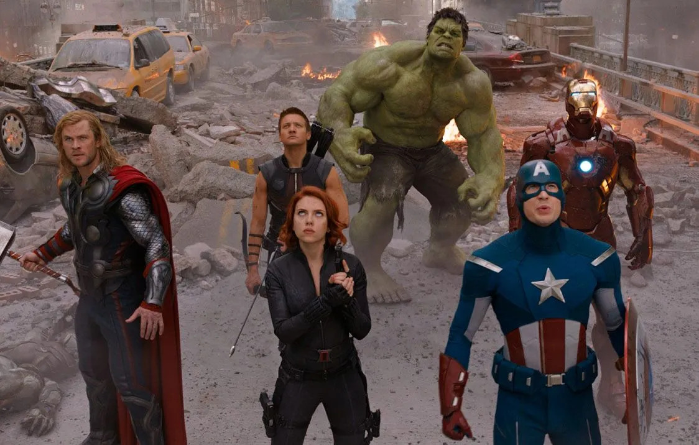

|
L’univers cinématographique Marvel est organisé en cycles, eux-mêmes
subdivisés en « phases ». C’est le film Iron Man (2008) qui lance la franchise,
dont la « première phase » introduit les divers super-héros constituant le groupe
des Avengers "Iron Man, Hulk, Thor, Black Widow, Hawkeye et Captain America" et se conclut par la réunion de tous ces personnages dans Avengers (2012).
Le premier cycle, baptisé « Saga de l'Infini » (« The Infinity Saga » en version originale),
comporte en tout trois phases et vingt-trois films, qui introduisent également des
héros extérieurs aux Avengers — notamment Ant-Man, Spider-Man, les Gardiens de la
Galaxie, Doctor
Strange, Black Panther et Captain Marvel.
Avec pour fil directeur
les Pierres d'Infinité et le personnage antagoniste Thanos, ce cycle culmine par
la réunion de quasiment tous les personnagesdans le diptyque Avengers:
Infinity War (2018) et Avengers: Endgame (2019).
Ce dernier film devient le
film de super-héros le plus lucratif de l'histoire avec des recettes approchant les 2,8 milliards de dollars.
|

|